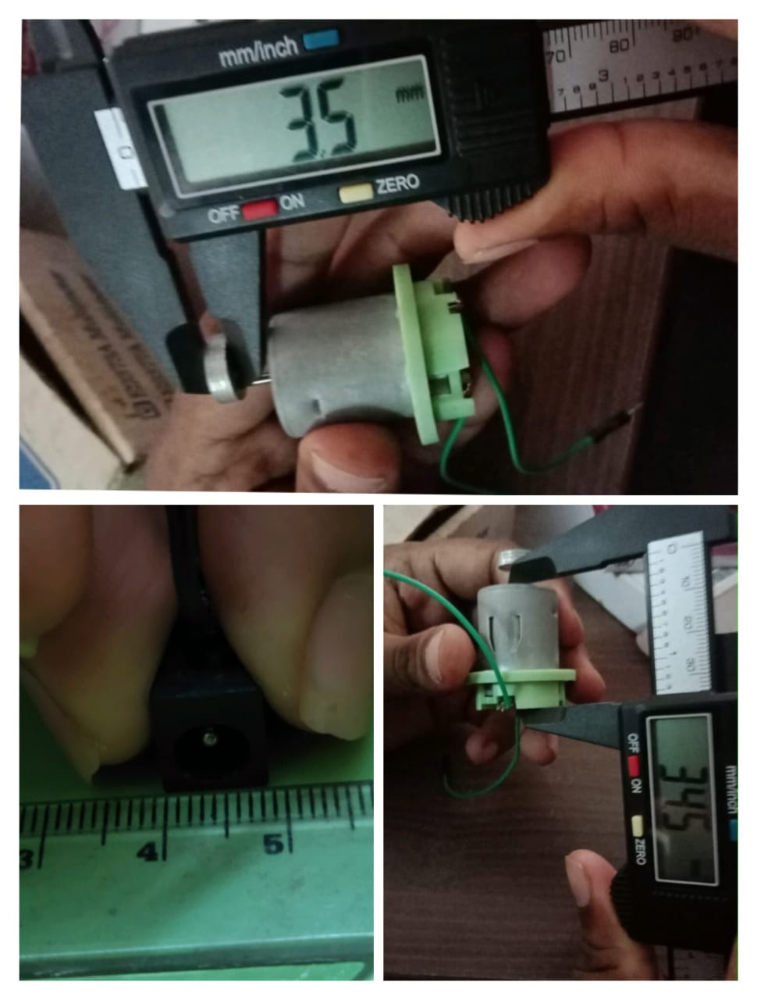
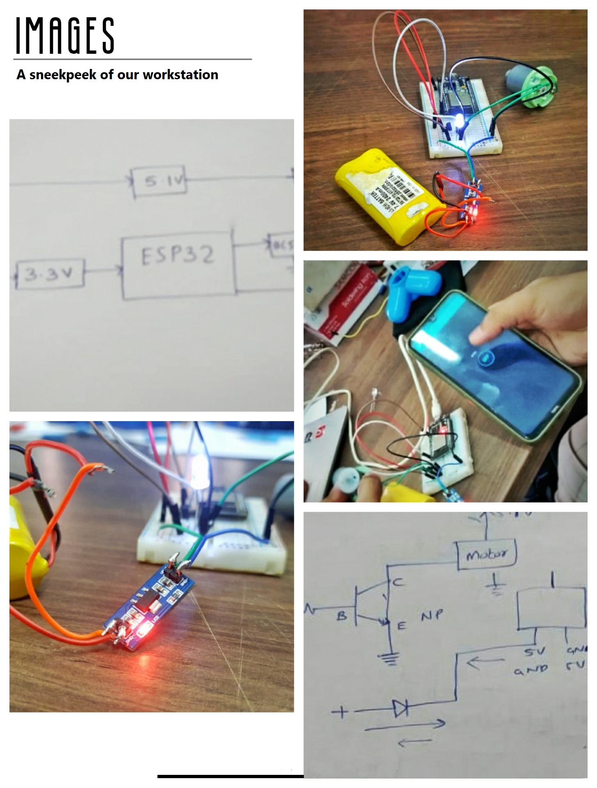

PRODUCT DESIGNING
April 10 2021 - April 17 2021
Software Used:
1. Fusion 360- It is a product introduced by Autodesk and integrating industrial design, structural design, mechanical simulation, and CAM,turns out a design platform supporting collaboration and sharing both cross-platform and via the cloud.
2. Ultimaker Cura- It is an open source slicing application for 3D printers.Cura is available under LGPLv3 license.
1. Circuit Diagram
The first task was to draw the circuit according to the specifications. The motor is programmed using ESP32. ESP32 is powered by regulated voltage of 3.3V. The transistor used in 2N2222 . The first draft of the circuit had some mistakes. Afterwards the circuit was modified by Amith sir. The final version of ciruit diagram is as shown below.

2. Rough Sketch
As a part of product designing, we initially started with rough analysis of the product to meet all its present characteristics. So rough analysis is shown herewith.

3. Finalising Dimensions
Inorder to convert our Rough Design into CAD Model, measurements of components like Motor, ESP32 and other components were taken using Digital Vernier Callipers to get accurate result.
